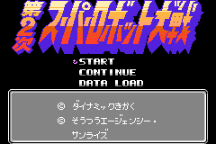

Famicom Mini - Dai-2-ji Super Robot Taisen (Japan) (Promo)
EEPROM 64K Save Format Spec gbakit Built-In
Cartridge Identity
- Game Code
FSRJ(FamilyFSR)- Header Title
SUPER ROBOT2- Maker / Revision
01/ rev0- ROM Size
- 1.0 MiB (1,048,576 B)
- Save Media
EEPROM 64K- SHA-256
c8e9944efdee407c27e3dff507a1aa5fc190c8529f956be0636e18c8c11c0665
Screenshots


Battery Save Format Specification
Open Full Save Format SpecDownload save-format.json
- Specification Coverage
- 4 mapped fields · 0 verified checksum(s) · Confidence: HIGH
- gbakit Built-In Support
- Built-in (FSRJ)
gbakit save verify FSRJ save.sav
gbakit save decode FSRJ save.sav
gbakit save fix FSRJ damaged.sav -o repaired.savObserved Battery Save Layout
- Fill Byte & Active Size
0x00fill · 520–520 / 8,192 B active (entropy 0.16 bits/B)- Active Offset Ranges
0x0–0x1FF,0xFF8–0xFFF(2 total)- ASCII Magic / Headers
ORS_S- Observed Variable Regions
- 0 bytes across 0 spans: None
- Candidate Checksum/Counter Spans
- None
Asset Map (formatkit.asset-map.v1)
Download FSRJ-r0-c8e9944efdee407c.asset-map.json.gz (3,865 B (3.8 KiB)) Verified PASS · 0.78% coverage
| Metric | Bytes / Value | Entries |
|---|---|---|
| Identified | 8,192 B (8.0 KiB) (0.78%) | 26 |
| Mapped | 0 B (0.00%) | 0 |
| Opaque | 0 B (0.00%) | 0 |
| Unknown | 1,040,384 B (1016.0 KiB) (99.22%) | 26 |
| Total ROM Size | 1,048,576 B (1.00 MiB) | 52 |
| Coverage % | 0.78% | — |
| Entries w/ Code Refs | 26 / 52 (50.00%) | — |
Top Identified Formats: gfx.gba-palette (25 · 8,000 B (7.8 KiB)) · gba.rom-header (1 · 192 B)
Largest unknown Extents (Headerless / Custom Asset Candidates)
| Offset | Size | Shannon Entropy | Code Refs |
|---|---|---|---|
0x0000D918 | 273,136 B (266.7 KiB) | 6.089 bits/B | 0 |
0x00090838 | 134,172 B (131.0 KiB) | 1.898 bits/B | 0 |
0x000E0228 | 130,520 B (127.5 KiB) | 8.000 bits/B | 0 |
0x000694F8 | 94,736 B (92.5 KiB) | 2.179 bits/B | 0 |
0x000C9730 | 92,888 B (90.7 KiB) | 7.848 bits/B | 0 |
gzip -dk FSRJ-r0-c8e9944efdee407c.asset-map.json.gz && gbakit map verify rom.gba FSRJ-r0-c8e9944efdee407c.asset-map.json
gbakit assets export rom.gba --asset-map FSRJ-r0-c8e9944efdee407c.asset-map.json -o out/Text, Fonts & Scene Data
- Primary Text Encoding
- Compressed / custom-encoded text (
1ASCII strings ·5Shift-JIS runs) - Font & VWF Indicators
- No VWF Table 1bpp Font · BIOS SWIs: BitUnPack
0x10:2· LZ770x11/12:4· Huffman0x13:3· RLE0x14/15:2 - Scene & Packaging
0ROM pointer tables (≥32 entries,0≥200) ·0relativeu32TOCs ·465OAM metasprite hits